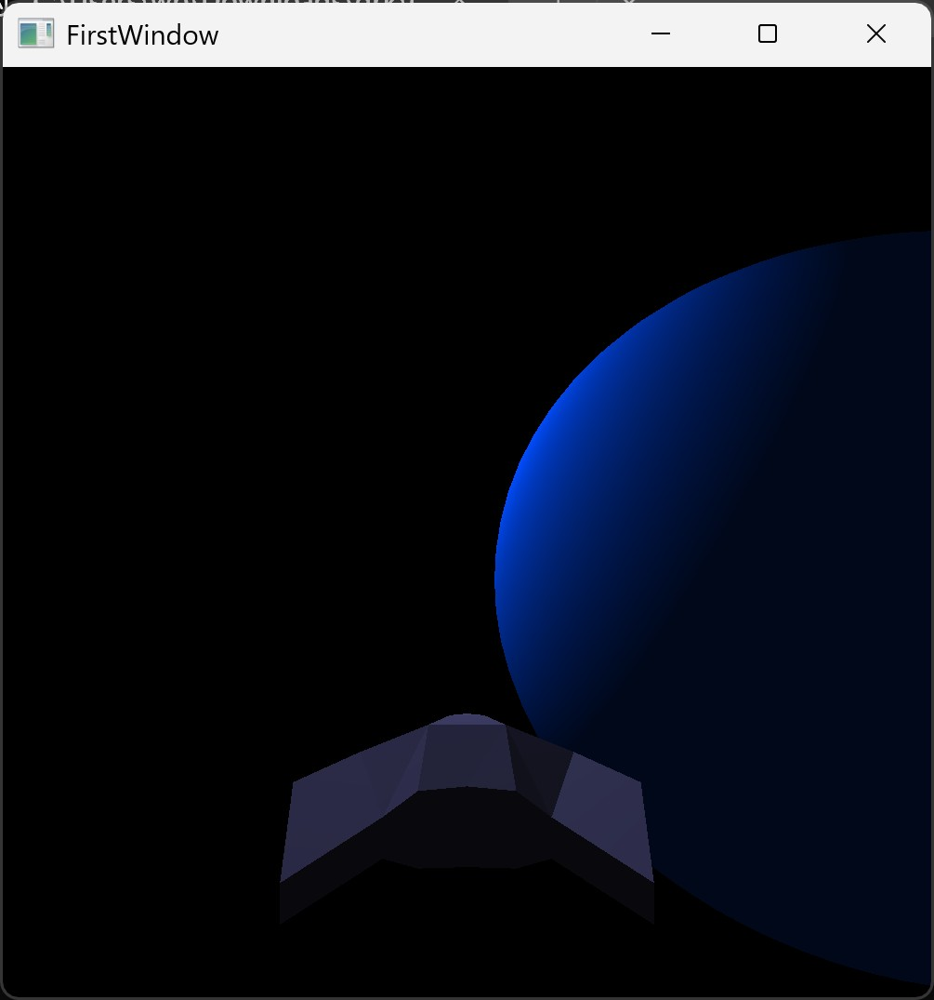
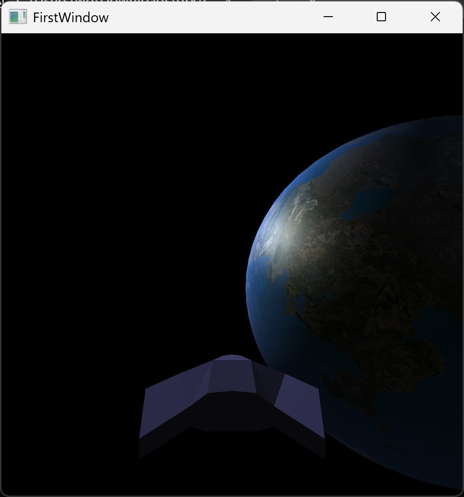
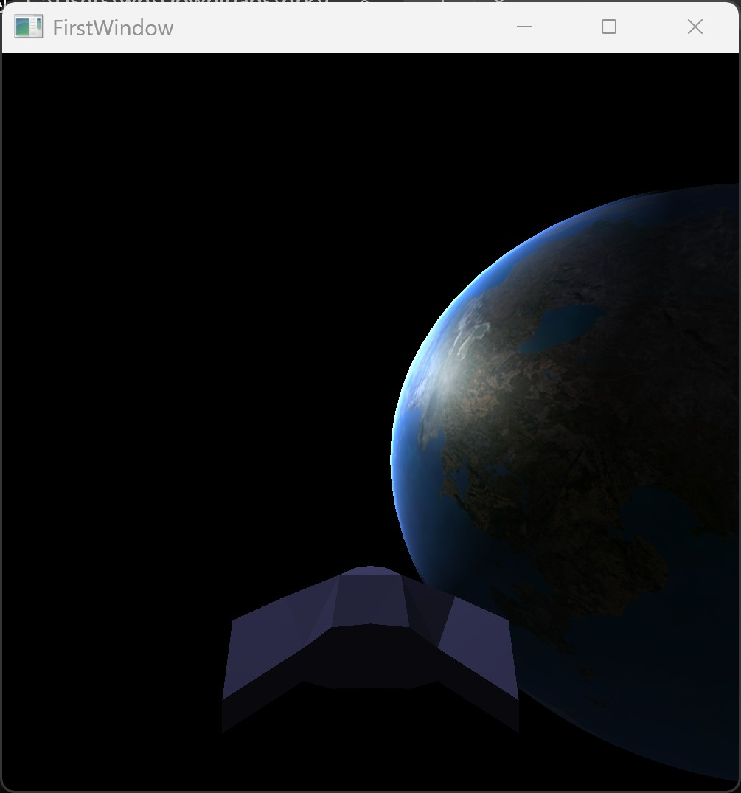

Witaj w cwiczeniu laboratoryjnym! Zaczynajac od prostego szkieletu kodu C++ i GLSL, krok po kroku zaimplementujesz renderowanie teksturowanej planety, jej atmosfery oraz warstwy chmur, wykorzystujac techniki takie jak blending i (w ostatnim etapie) mapowanie normalnych.
Twoim glownym zadaniem bedzie dodawanie fragmentow kodu w miejscach oznaczonych komentarzami // Miejsce na ... (Etap X) w pliku ex_6_1.hpp oraz w odpowiednich plikach shaderow (.vert, .frag). W ostatnim etapie bedziesz rowniez modyfikowac wczesniej dodany kod.
Na poczatek skompiluj i uruchom dostarczony kod szkieletowy (ex_6_1.hpp). Powinienes zobaczyc obracajaca sie niebieska kule oraz statek kosmiczny na czarnym tle. Uzywane sa podstawowe shadery shader_5_1.vert i shader_5_1.frag oraz funkcja drawObjectColor.
Zadanie:
init, renderScene, drawObjectColor oraz shaderami shader_5_1.vert / .frag.
Zastapimy jednolity niebieski kolor tekstura planety. Wymaga to dodania zmiennych, zaladowania zasobow, zdefiniowania nowej funkcji rysujacej, modyfikacji shaderow do obslugi wspolrzednych tekstur i zmiany wywolania w petli renderowania.
Zadanie:
Dodaj te deklaracje na gorze pliku:
// W przestrzeni nazw 'texture' (pod komentarzem '// Miejsce na deklaracje zmiennych tekstur (Etapy 2, 4, 5)')
GLuint earth;
// Pod deklaracja 'GLuint program;' (pod komentarzem '// Miejsce na deklaracje zmiennych programow shaderow (Etapy 2, 3, 4)')
GLuint programTex;init:
Dodaj te linie w sekcji ladowania shaderow (pod komentarzem // Miejsce na ladowanie dodatkowych programow shaderow):
programTex = shaderLoader.CreateProgram("shaders/shader_5_1_tex.vert", "shaders/shader_5_1_tex.frag"); // Zakladamy dedykowane shadery dla tekstur
if (programTex == 0) { std::cerr << "Blad ladowania shaderow tekstur!" << std::endl; exit(1); }Dodaj te linie w sekcji ladowania tekstur (pod komentarzem // Miejsce na ladowanie tekstur):
std::cout << "Ladowanie tekstury Ziemi..." << std::endl;
texture::earth = Core::LoadTexture("textures/Mandalore Legends (Diffuse 4k).png");
if (texture::earth == 0) { std::cerr << "Blad ladowania tekstury Ziemi!" << std::endl; }// Miejsce na definicje funkcji drawObjectTexture (Etap 2):
Dodaj cala definicje funkcji (zwracajac uwage na tylko jeden parametr tekstury):
void drawObjectTexture(Core::RenderContext& context, glm::mat4 modelMatrix, GLuint textureID) {
GLuint prog = programTex; // Uzyj programu shaderow dla tekstur
glUseProgram(prog);
glm::mat4 viewProjectionMatrix = createPerspectiveMatrix() * createCameraMatrix();
glm::mat4 transformation = viewProjectionMatrix * modelMatrix;
glUniformMatrix4fv(glGetUniformLocation(prog, "transformation"), 1, GL_FALSE, (float*)&transformation);
glUniformMatrix4fv(glGetUniformLocation(prog, "modelMatrix"), 1, GL_FALSE, (float*)&modelMatrix);
glUniform3f(glGetUniformLocation(prog, "lightPos"), -5.f, 3.f, 3.f);
glUniform3f(glGetUniformLocation(prog, "cameraPos"), cameraPos.x, cameraPos.y, cameraPos.z);
// Ustawienie tekstury jako aktywnej na jednostce 0
Core::SetActiveTexture(textureID, "colorTexture", prog, 0);
// Miejsce na dodanie aktywacji normal mapy (Etap 5) -> Zostanie dodane w Etapie 5
Core::DrawContext(context);
glUseProgram(0);
}renderScene:
Zakomentuj linie:
// drawObjectColor(sphereContext, planetModelMatrix, glm::vec3(0.0, 0.3, 1.0));Dodaj te linie w miejscu oznaczonym // Miejsce na wywolanie rysowania planety z tekstura (Etap 2):
drawObjectTexture(sphereContext, planetModelMatrix, texture::earth);Dodaj wejscie dla wspolrzednych tekstury (pod // Miejsce na dodanie wejscia dla wspolrzednych tekstur):
layout(location = 2) in vec2 vertexTexCoord;Dodaj wyjscie dla wspolrzednych tekstury (pod // Miejsce na dodanie wyjscia dla wspolrzednych tekstur):
out vec2 texCoord;W funkcji main, dodaj przypisanie (pod // Miejsce na przekazanie wspolrzednych tekstur):
texCoord = vertexTexCoord;Dodaj wejscie dla wspolrzednych tekstury (pod // Miejsce na dodanie wejscia dla wspolrzednych tekstur):
in vec2 texCoord;Dodaj sampler tekstury (pod // Miejsce na dodanie samplerow tekstur):
uniform sampler2D colorTexture;W funkcji main, zastap linie vec3 surfaceColor = color; tym kodem (pod // Miejsce na pobranie koloru z tekstury):
vec3 surfaceColor = texture(colorTexture, texCoord).rgb;(Upewnij sie, ze dalsze obliczenia ambient i diffuse uzywaja surfaceColor.)
shutdown:
Dodaj te linie (pod // Miejsce na usuwanie dodatkowych programow shaderow):
shaderLoader.DeleteProgram(programTex);Dodaj te linie (pod // Miejsce na usuwanie tekstur):
glDeleteTextures(1, &texture::earth);
Dodamy efekt atmosfery, renderujac druga, wieksza sfere z efektem rozswietlenia krawedzi (rim lighting) przy uzyciu blendingu. Technika blendingu jest wyjaśniona na stronie https://learnopengl.com/Advanced-OpenGL/Blending.
Zadanie:
Dodaj deklaracje pod programTex (pod komentarzem // Miejsce na deklaracje zmiennych programow shaderow):
GLuint programAtm;init:
Dodaj te linie pod ladowaniem programTex (pod komentarzem // Miejsce na ladowanie dodatkowych programow shaderow):
programAtm = shaderLoader.CreateProgram("shaders/shader_5_1_atm.vert", "shaders/shader_5_1_atm.frag"); // Zakladamy dedykowane shadery dla atmosfery
if (programAtm == 0) { std::cerr << "Blad ladowania shaderow atmosfery!" << std::endl; exit(1); }// Miejsce na definicje funkcji drawObjectAtmosphere (Etap 3):
Dodaj cala definicje funkcji:
void drawObjectAtmosphere(Core::RenderContext& context, glm::mat4 modelMatrix) {
GLuint prog = programAtm; // Uzyj programu shaderow atmosfery
glUseProgram(prog);
// Wlaczenie blendingu addytywnego
glEnable(GL_BLEND);
glBlendFunc(GL_ONE, GL_ONE); // Kolory beda dodawane
glDepthMask(GL_FALSE); // Nie zapisuj do bufora glebokosci, aby nie zaslonic planety
glm::mat4 viewProjectionMatrix = createPerspectiveMatrix() * createCameraMatrix();
glm::mat4 transformation = viewProjectionMatrix * modelMatrix;
glUniformMatrix4fv(glGetUniformLocation(prog, "transformation"), 1, GL_FALSE, (float*)&transformation);
glUniformMatrix4fv(glGetUniformLocation(prog, "modelMatrix"), 1, GL_FALSE, (float*)&modelMatrix); // Potrzebne dla normalnych w shaderze
glUniform3f(glGetUniformLocation(prog, "lightPos"), -5.f, 3.f, 3.f); // Potrzebne dla sunInfluence
glUniform3f(glGetUniformLocation(prog, "cameraPos"), cameraPos.x, cameraPos.y, cameraPos.z); // Potrzebne dla rim lighting
// Uniformy specyficzne dla atmosfery
glUniform3f(glGetUniformLocation(prog, "atmosphereColor"), 0.35f, 0.57f, 1.0f); // Kolor poswiaty
glUniform1f(glGetUniformLocation(prog, "intensity"), 1.5f); // Intensywnosc poswiaty
Core::DrawContext(context);
// Wylaczenie blendingu i przywrocenie zapisu do bufora glebokosci
glDepthMask(GL_TRUE);
glDisable(GL_BLEND);
glUseProgram(0);
}renderScene:
Dodaj te linie w miejscu oznaczonym // Miejsce na wywolanie rysowania atmosfery (Etap 3):
// Atmosfera jest rysowana jako ostatnia (po planecie i chmurach), lekko powiekszona
glm::mat4 atmosphereModelMatrix = planetModelMatrix * glm::scale(glm::vec3(1.009f));
drawObjectAtmosphere(sphereContext, atmosphereModelMatrix);worldPos i vecNormal (interpolowana normalna wierzcholka).Dodaj potrzebne uniformy (pod // Miejsce na dodanie uniformow dla atmosfery):
uniform vec3 cameraPos;
uniform vec3 lightPos;
uniform vec3 atmosphereColor;
uniform float intensity;W funkcji main, na koncu (pod // Miejsce na obliczenia dla atmosfery), dodaj logike rim-lightingu modulowana przez swiatlo sloneczne (zamiast outColor = vec4(finalColor, 1.0);):
// Uzywamy interpolowanej normalnej wierzcholka
vec3 N = normalize(vecNormal);
vec3 V = normalize(cameraPos - worldPos); // Wektor do kamery
vec3 L = normalize(lightPos - worldPos); // Wektor do swiatla
// Oblicz wspolczynnik rim (poswiaty na krawedzi)
float dotVN = dot(V, N);
float rim = 1.0 - dotVN; // 0 w centrum, ~1 na krawedzi
float glow = pow(clamp(rim, 0.0, 1.0), 3.5); // Kontroluje szerokosc poswiaty
// Oblicz wplyw swiatla slonecznego (przyciemnij nocna strone)
float sunInfluence = clamp(dot(N, L), 0.0, 1.0);
// Moduluj poswiate przez wplyw slonca
glow *= sunInfluence;
// Kolor koncowy to kolor atmosfery * poswiata * intensywnosc
vec3 finalColor = atmosphereColor * glow * intensity;
// Ustaw kolor RGB i alpha (alpha moze byc uzyte do kontroli blendingu)
// Dla GL_ONE, GL_ONE alpha jest ignorowane, ale ustawienie glow moze byc uzyteczne
outColor = vec4(finalColor, glow);
drawObjectAtmosphere).
shutdown:
Dodaj te linie (pod // Miejsce na usuwanie dodatkowych programow shaderow):
shaderLoader.DeleteProgram(programAtm);
Dodamy warstwe chmur miedzy planeta a atmosfera, uzywajac tekstury koloru, z ktorej bedziemy rowniez wyznaczac przezroczystosc. Uzyjemy standardowego alpha blendingu i podstawowego oswietlenia.
Zadanie:
Dodaj deklaracje w przestrzeni nazw texture (pod // Miejsce na deklaracje zmiennych tekstur):
GLuint clouds; // Tekstura koloru/alpha dla chmurDodaj deklaracje programu shadera (pod // Miejsce na deklaracje zmiennych programow shaderow):
GLuint programCloud;init:
Dodaj ladowanie programu shadera (pod // Miejsce na ladowanie dodatkowych programow shaderow):
programCloud = shaderLoader.CreateProgram("shaders/shader_5_1_cloud.vert", "shaders/shader_5_1_cloud.frag"); // Dedykowane shadery dla chmur
if (programCloud == 0) { std::cerr << "Blad ladowania shaderow chmur!" << std::endl; exit(1); }Dodaj ladowanie tekstury (pod // Miejsce na ladowanie tekstur):
std::cout << "Ladowanie tekstury chmur..." << std::endl;
texture::clouds = Core::LoadTexture("textures/Taris (Clouds 4k).png"); // Tekstura koloru i alpha
if (texture::clouds == 0) { std::cerr << "Blad ladowania tekstury koloru chmur!" << std::endl; }// Miejsce na definicje funkcji drawObjectClouds (Etap 4):
Dodaj cala definicje funkcji (zwracajac uwage na tylko jeden parametr tekstury):
void drawObjectClouds(Core::RenderContext& context, glm::mat4 modelMatrix, GLuint cloudColorTexture) {
GLuint prog = programCloud; // Uzyj programu shaderow chmur
glUseProgram(prog);
// Wlaczenie standardowego alpha blendingu
glEnable(GL_BLEND);
glBlendFunc(GL_SRC_ALPHA, GL_ONE_MINUS_SRC_ALPHA);
glDepthMask(GL_FALSE); // Nie zapisuj do bufora glebokosci
glm::mat4 viewProjection = createPerspectiveMatrix() * createCameraMatrix();
glm::mat4 transformation = viewProjection * modelMatrix;
glUniformMatrix4fv(glGetUniformLocation(prog, "transformation"), 1, GL_FALSE, (float*)&transformation);
glUniformMatrix4fv(glGetUniformLocation(prog, "modelMatrix"), 1, GL_FALSE, (float*)&modelMatrix);
glUniform3f(glGetUniformLocation(prog, "lightPos"), -5.f, 3.f, 3.f); // Dla oswietlenia chmur
glUniform3f(glGetUniformLocation(prog, "cameraPos"), cameraPos.x, cameraPos.y, cameraPos.z);
// Dodaj uniformy, jesli shader ich wymaga (np. shininess)
glUniform1f(glGetUniformLocation(prog, "shininess"), 30.0f); // Przykladowa wartosc dla specular
// glUniform3f(glGetUniformLocation(prog, "planetCenter"), 0.f, 0.f, 0.f); // Jesli potrzebne
// Ustawienie tekstury koloru/alpha na jednostce 0
Core::SetActiveTexture(cloudColorTexture, "cloudColor", prog, 0);
Core::DrawContext(context);
// Wylaczenie blendingu i przywrocenie zapisu glebokosci
glDepthMask(GL_TRUE);
glDisable(GL_BLEND);
glUseProgram(0);
}renderScene:
Dodaj te linie w miejscu oznaczonym // Miejsce na wywolanie rysowania chmur (Etap 4) (WAZNE: przed rysowaniem atmosfery):
// Chmury rysowane po planecie, przed atmosfera, z wlasna rotacja i skala
glm::mat4 cloudModelMatrix = glm::rotate(time * 0.05f, glm::vec3(0, 1, 0)) // Wolniejsza rotacja chmur
* planetModelMatrix // Bazuj na transformacji planety
* glm::scale(glm::vec3(1.005f)); // Skala miedzy planeta a atmosfera
drawObjectClouds(sphereContext, cloudModelMatrix, texture::clouds); // Przekaz tylko teksture koloru/alphaworldPos, vecNormal (interpolowana normalna wierzcholka) i texCoord.Dodaj sampler dla tekstury koloru i uniform shininess (pod // Miejsce na dodanie samplerow tekstur):
uniform sampler2D cloudColor;
uniform float shininess = 30.0;
// uniform vec3 planetCenter; // Jesli potrzebneW funkcji main, na koncu (pod // Miejsce na obliczenia dla chmur), dodaj logike probkowania, oswietlenia i alpha blendingu (zamiast outColor = vec4(finalColor, 1.0);):
// Uzyj interpolowanej normalnej wierzcholka (worldNormal) na razie
// W Etapie 5 zostanie ona zastapiona normalna z mapy
vec3 N = normalize(vecNormal);
vec3 L = normalize(lightPos - worldPos);
vec3 V = normalize(cameraPos - worldPos);
vec3 H = normalize(L + V); // Halfway vector dla specular
// === Diffuse Lighting ===
// Wplyw swiatla slonecznego na podstawie normalnej wierzcholka
float sunInfluence = clamp(dot(N, L), 0.0, 1.0);
// === Specular Lighting ===
// Podstawowy specular na podstawie normalnej wierzcholka
float spec = pow(max(dot(N, H), 0.0), shininess);
vec3 specularColor = vec3(1.0) * spec * sunInfluence * 0.3; // Zmniejszona intensywnosc
// === Cloud Shading & Alpha ===
vec4 cloudSample = texture(cloudColor, texCoord); // Probkujemy raz dla koloru i alpha
vec3 cloudTex = cloudSample.rgb;
// Oswietlenie chmury (ambient + diffuse)
// Uzyj stalej AMBIENT zdefiniowanej wczesniej w shaderze
vec3 cloudLit = cloudTex * (AMBIENT + sunInfluence);
// Polacz oswietlenie diffuse/ambient i specular
vec3 finalColor = cloudLit + specularColor;
// === Alpha control ===
// Uzyj kanalu alpha bezposrednio z tekstury
float finalAlpha = cloudSample.a;
// Zwieksz jasnosc i ustaw alpha
outColor = vec4(finalColor * 2.5, finalAlpha * 0.8);
shutdown:
Dodaj usuwanie programu (pod // Miejsce na usuwanie dodatkowych programow shaderow):
shaderLoader.DeleteProgram(programCloud);Dodaj usuwanie tekstury (pod // Miejsce na usuwanie tekstur):
glDeleteTextures(1, &texture::clouds);
W tym etapie dodamy mapowanie normalnych do planety (i opcjonalnie do chmur), aby uzyskac bardziej szczegolowe oswietlenie powierzchni. Bedziemy musieli zaladowac odpowiednie tekstury (mapy normalnych/bump), zmodyfikowac istniejace funkcje rysujace i ich wywolania w renderScene, oraz rozszerzyc shadery o obsluge wektorow stycznych (tangent), bitangentnych (bitangent) i macierzy TBN. Technika mapowania normalnych jest wyjaśniona (w języku angielskim) na stronie https://learnopengl.com/Advanced-Lighting/Normal-Mapping.
Zadanie (dla planety):
Dodaj te deklaracje w przestrzeni nazw texture (pod // Miejsce na deklaracje zmiennych tekstur, obok istniejacych):
GLuint earthNormal; // Mapa normalnych/bump dla Ziemi
GLuint cloudsT; // Mapa normalnych/bump dla chmurinit:
Dodaj ladowanie tekstur (pod // Miejsce na ladowanie tekstur, obok istniejacych):
std::cout << "Ladowanie mapy normalnych Ziemi..." << std::endl;
texture::earthNormal = Core::LoadTexture("textures/Mandalore Legends (Bump 4k).png");
if (texture::earthNormal == 0) { std::cerr << "Blad ladowania mapy normalnych Ziemi!" << std::endl; }
std::cout << "Ladowanie mapy bump/normal chmur..." << std::endl;
texture::cloudsT = Core::LoadTexture("textures/Taris (Clouds Bump 4k).png");
if (texture::cloudsT == 0) { std::cerr << "Blad ladowania mapy bump/normal chmur!" << std::endl; }Wazne: Upewnij sie ponownie, ze w funkcji loadModelToContext jest uzywana flaga aiProcess_CalcTangentSpace przy wywolaniu import.ReadFile.
drawObjectTexture): W pliku ex_6_1.hpp:
Zmodyfikuj istniejaca funkcje drawObjectTexture, dodajac drugi parametr tekstury i aktywujac mape normalnych:
// Zmien sygnature, dodajac parametr normalMapTextureID
void drawObjectTexture(Core::RenderContext& context, glm::mat4 modelMatrix, GLuint colorTextureID, GLuint normalMapTextureID) {
GLuint prog = programTex;
glUseProgram(prog);
// ... (reszta uniformow bez zmian) ...
glUniformMatrix4fv(glGetUniformLocation(prog, "transformation"), 1, GL_FALSE, (float*)&transformation);
glUniformMatrix4fv(glGetUniformLocation(prog, "modelMatrix"), 1, GL_FALSE, (float*)&modelMatrix);
glUniform3f(glGetUniformLocation(prog, "lightPos"), -5.f, 3.f, 3.f);
glUniform3f(glGetUniformLocation(prog, "cameraPos"), cameraPos.x, cameraPos.y, cameraPos.z);
// Ustawienie tekstury koloru na jednostce 0
Core::SetActiveTexture(colorTextureID, "colorTexture", prog, 0);
// Dodaj aktywacje normal mapy na jednostce 1
Core::SetActiveTexture(normalMapTextureID, "normalMap", prog, 1);
Core::DrawContext(context);
glUseProgram(0);
}renderScene): W pliku ex_6_1.hpp:
Zmodyfikuj istniejace wywolanie drawObjectTexture, dodajac texture::earthNormal jako drugi argument tekstury:
// Zmienione wywolanie dla planety
drawObjectTexture(sphereContext, planetModelMatrix, texture::earth, texture::earthNormal);Dodaj wejscia dla Tangent i Bitangent (pod // Miejsce na dodanie wejscia dla TBN):
layout(location = 3) in vec3 vertexTangent;
layout(location = 4) in vec3 vertexBitangent;Dodaj wyjscie dla macierzy TBN (pod // Miejsce na dodanie wyjscia dla macierzy TBN):
out mat3 TBN;W funkcji main, dodaj obliczenia TBN (pod // Miejsce na obliczenie i przekazanie macierzy TBN):
// Transformacja wektorow T, B, N (bazowych normalnych wierzcholka) do przestrzeni swiata
vec3 T = normalize(mat3(modelMatrix) * vertexTangent);
vec3 B = normalize(mat3(modelMatrix) * vertexBitangent);
vec3 N_vert = normalize(mat3(modelMatrix) * vertexNormal);
// Stworz macierz TBN (kolumnowo)
TBN = mat3(T, B, N_vert);Dodaj wejscie dla macierzy TBN (pod // Miejsce na dodanie wejscia dla macierzy TBN):
in mat3 TBN;Dodaj sampler mapy normalnych (pod // Miejsce na dodanie samplerow tekstur):
uniform sampler2D normalMap;W funkcji main, zastap linie vec3 N = normalize(vecNormal); tym kodem (pod // Miejsce na obliczenie normalnej z mapy normalnych):
// Pobierz normalna z mapy (jest w zakresie [0,1])
vec3 tangentNormal = texture(normalMap, texCoord).rgb;
// Przeksztalc ja do zakresu [-1, 1]
tangentNormal = normalize(tangentNormal * 2.0 - 1.0);
// Przeksztalc normalna z przestrzeni stycznej (tangent space) do przestrzeni swiata za pomoca TBN
vec3 N = normalize(TBN * tangentNormal);(Dalsze obliczenia oswietlenia beda teraz uzywac N z mapy normalnych.)
shutdown:
Dodaj usuwanie tekstur normalnych/bump (pod // Miejsce na usuwanie tekstur):
glDeleteTextures(1, &texture::earthNormal);
glDeleteTextures(1, &texture::cloudsT);drawObjectClouds w C++: Dodaj drugi parametr `GLuint cloudNormalTextureID` do sygnatury. Wewnatrz funkcji dodaj wywolanie `Core::SetActiveTexture(cloudNormalTextureID, "cloudNormal", prog, 1);`.drawObjectClouds w C++ (renderScene): Dodaj `texture::cloudsT` jako drugi argument tekstury.Dodaj wejscie `in mat3 TBN;`. Dodaj sampler `uniform sampler2D cloudNormal;`. W `main` zastap linie `vec3 N = normalize(vecNormal);` obliczeniami normalnej z mapy, tak jak dla planety, ale uzywajac samplera `cloudNormal`.
Przyklad zaktualizowanego shadera fragmentow dla chmur (bazujacy na uproszczonym przykladzie uzytkownika):
#version 430 core
in vec3 worldPos;
// in vec3 worldNormal; // Juz niepotrzebne, jesli uzywamy normal mapy
in vec2 texCoord;
in mat3 TBN; // Wejscie z vertex shadera
out vec4 fragColor;
// uniform vec3 planetCenter; // Prawdopodobnie niepotrzebne
uniform vec3 lightPos;
uniform vec3 cameraPos;
uniform sampler2D cloudColor;
uniform sampler2D cloudNormal; // Sampler dla mapy normalnych chmur
uniform float shininess = 30.0; // Kontrola specular
const float AMBIENT = 0.1; // Stala ambient
void main() {
vec2 uv = texCoord;
// === Normal Mapping ===
vec3 tangentNormal = texture(cloudNormal, uv).rgb;
tangentNormal = normalize(tangentNormal * 2.0 - 1.0);
// Uzywamy normalnej z mapy zamiast interpolowanej normalnej wierzcholka
vec3 N = normalize(TBN * tangentNormal); // Nazywamy ja N dla spojnosci
// === Lighting vectors ===
vec3 L = normalize(lightPos - worldPos);
vec3 V = normalize(cameraPos - worldPos);
vec3 H = normalize(L + V); // Halfway vector
// === Diffuse Lighting ===
float sunInfluence = clamp(dot(N, L), 0.0, 1.0);
// === Specular Lighting ===
float spec = pow(max(dot(N, H), 0.0), shininess);
vec3 specularColor = vec3(1.0) * spec * sunInfluence * 0.3;
// === Cloud Shading & Alpha ===
vec4 cloudSample = texture(cloudColor, uv); // Probkujemy raz dla koloru i alpha
vec3 cloudTex = cloudSample.rgb;
vec3 cloudLit = cloudTex * (AMBIENT + sunInfluence); // Proste oswietlenie
// Usunieto Fake occlusion
vec3 finalColor = cloudLit + specularColor;
// === Alpha control ===
float finalAlpha = cloudSample.a; // Uzyj alpha z tekstury
fragColor = vec4(finalColor * 2.5, finalAlpha * 0.8);
}

Gratulacje! Po wykonaniu wszystkich etapow powinnienes widziec w pelni funkcjonalna scene z:
Jesli masz czas i checi, sprobuj rozszerzyc projekt: